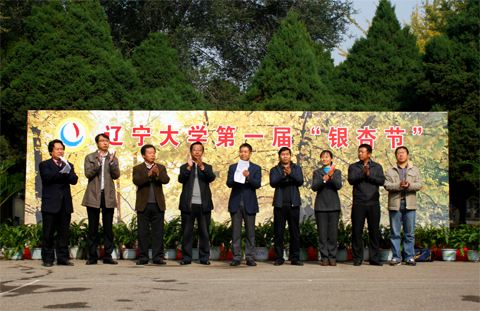
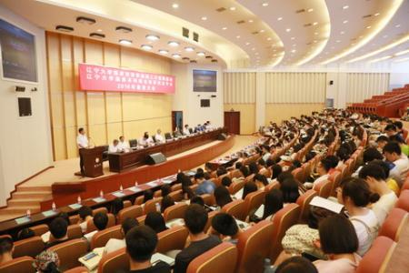

左箭头图标
内容详情
回复
辽宁大学信息学院
辽宁大学信息学院座落于古朴厚重的崇山校区，现有用房总建筑面积8000余平方米，使用面积所属总计约5417平方米。学院前身为计算机科学系，于1984年在数学系计算数学专业基础上成立，设有计算机应用技术和计算机软件2个专业；1986年，计算机科学系与物理系计算机应用研究所合并成立计算机科学与技术系；1999年10月18日，学校以计算机科学与技术系、电子科学与工程系为主体，整合工商管理学院信息管理与信息技术专业组建信息科学与技术学院，时任国家领导人王文元同志亲笔题写院名；2007年更名为辽宁大学信息学院。多年来，学院秉承“明德精学 笃行致强”校训精神，以学科建设为龙头，以提高教学质量为核心，以社会化需求为导向，以人才培养为宗旨，不断调整课程结构、完善教学体系，为社会输出大量专业技术人才，获得了很好的社会效应。 学院现有教职工83人，专任教师71人。其中，教授11人，副教授31人，获得博士学位31人。学院现设有计算机科学与技术、软件工程、电子信息科学与技术、通信工程和信息管理与信息系统5个本科专业；拥有计算机科学与技术（计算机软件与理论、计算机应用技术、计算机系统结构）和软件工程2个一级学科硕士学位授权点，及软件工程专业硕士学位授权点；拥有大数据统计与智能计算二级学科博士学位授权点。在校本科生和研究生1500余人。 学院现有省部共建电工电子实验中心、省部共建极端环境下的计算技术实验室、辽宁省电工电子教学示范中心、辽宁省智慧城市虚拟仿真实验教学中心和辽宁省公共舆情与网络安全信息系统重点实验室5个省部级科研实验平台；大学生电子创新创业实验室、大数据创新创业实验室、网络商务创新创业实验室3个校级创新创业实验室；2016年，学院还新建了“移动通信实验室”和“电磁场与微波技术实验室”。各类实验室配有先进计算机450余台，多组套程控交换机、数据通信等仪器设施，固定资产总值800余万元。 学院主要学术研究方向包括数据库理论与技术、多媒体技术、网络技术与应用、管理信息系统、智能小区与电子商务、软件开发环境与开发工具、计算机图形图像处理、电路与系统、数字信号处理、电子信息处理与传输、微机接口技术、智能仪表测量等。 学院教学设施完善齐备，技术先进，优秀的教师队伍和良好的教学实验环境培养出综合素质优秀的大学生。在历届全国大学生电子设计大赛中，学院学生组成的代表队所获奖项和奖次位均居省内前列。在27届ACM国际大学生程序设计竞赛亚洲赛区比赛中学院代表辽宁大学参赛，取得优异成绩。2016年度，学院300余名学生参与各类大学生竞赛项目，110余人次荣获佳绩。其中，大学生网络商务创新应用大赛全国总决赛冠军和二等奖1项，辽宁省赛区特等奖2项、二等奖1项；大学生电子商务类“创新、创意及创业”挑战赛辽宁赛区二等奖4项、三等奖1项，“最佳创新奖”2项；辽宁省大学生电子设计竞赛囊括一、二、三等奖及成功参赛奖，辽宁省大学生计算机设计竞赛一、二、三等奖各1项；大学生创新创业训练计划项目获推省级2项，入围国家级项目评审1项。 学院注重国际交流，开拓学术视野，提高学术水平和影响力。近年来，学院多次向国外学术机构和高校派出访问学者，聘请国外知名专家来院讲座。先后与英国德蒙福特大学、韩国大邱大学、日本鸟取大学建立了联系，开展了学术交流活动。积极推进同澳洲国立大学交流项目，已有多名在校学生顺利赴澳洲国立开展学习。
 
视频:
音频:
您的浏览器不支持 audio 元素。